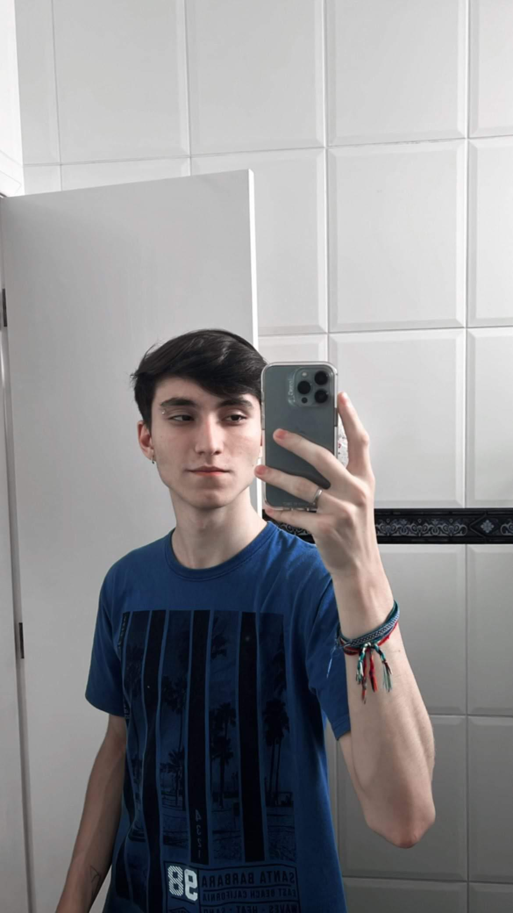

Euler Couto Barreto, tem 17 anos, se formou no Instituto Federal Campus Rio Pomba, concluiu em conjunto com o Ensino Médio o Técnico Integrado em Informática, 2022. Encontrou sua paixão por programação, participando de projetos como Desenvolvedor WEB e programas desktop para controle de arduino em Python. Bom conhecimento das linguagens Javascript e Python, mas apenas PHP para Back-end e conhecimentos básicos em HTML5 e CSS. Nascido em Rio Pomba - MG, mas atualmente reside na cidade (taltaltal).
Se deu o inicio na área da programação na criação de jogos, com e sem a utilização de ferramentas como Unity e Godot, e atividades de raciocínio lógico, com participação na OBI(olimpíada Brasileira de Informática) englobando a facilidade em adquirir conhecimento na área.